승인하려면 src/data/seo/carousel-image-manifest.ts 의 status 를 approved 로 변경하세요.
| id | 원본 | 생성 이미지 | 연결 페이지 | 문구 | variant | 결과 | 상태 |
|---|---|---|---|---|---|---|---|
| hub-services | /image/홈-신뢰안내.png | 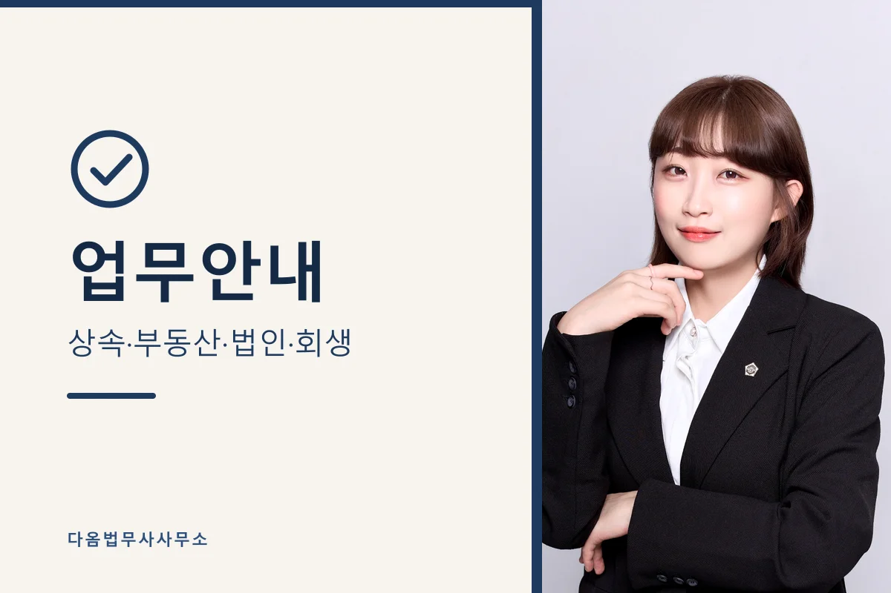 |
/services | 업무안내 상속·부동산·법인·회생 |
portrait-right | 1200×800 · 47KB | approved → 검토 후 approved 로 변경 |
| svc-inheritance-registration | /image/썸네일-등기필증_상속.jpg | 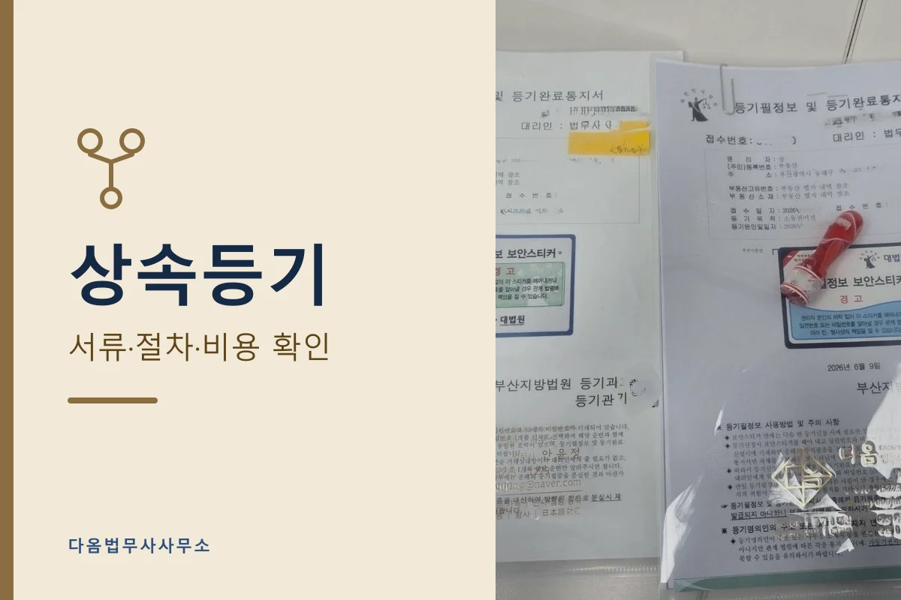 |
/services/inheritance-registration | 상속등기 서류·절차·비용 확인 |
document-focus | 1200×800 · 53KB | approved → 검토 후 approved 로 변경 |
| svc-inheritance-renunciation | /image/썸네일-법원절차.jpg | 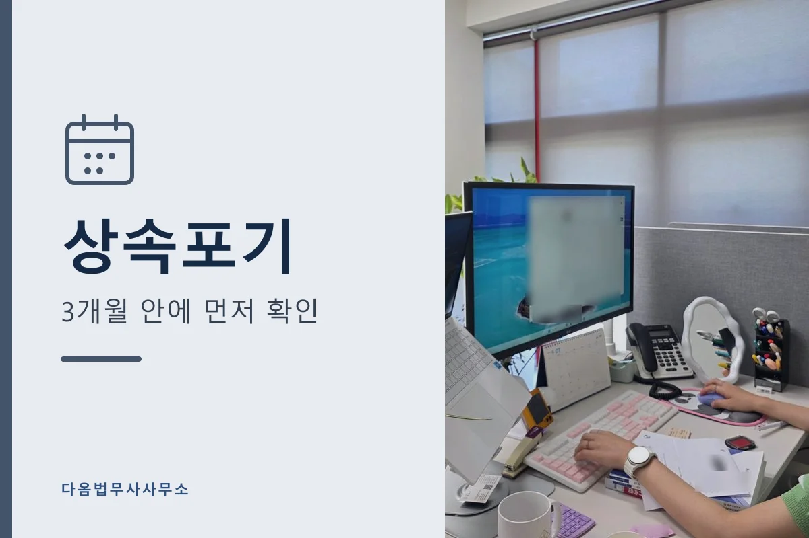 |
/services/inheritance-renunciation | 상속포기 3개월 안에 먼저 확인 |
document-focus | 1200×800 · 47KB | approved → 검토 후 approved 로 변경 |
| svc-qualified-acceptance | /image/썸네일-아래.jpg | 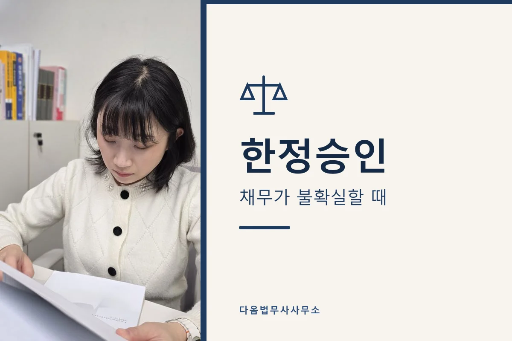 |
/services/qualified-acceptance | 한정승인 채무가 불확실할 때 |
portrait-left | 1200×800 · 41KB | approved → 검토 후 approved 로 변경 |
| svc-real-estate | /image/썸네일-등기소.jpg | 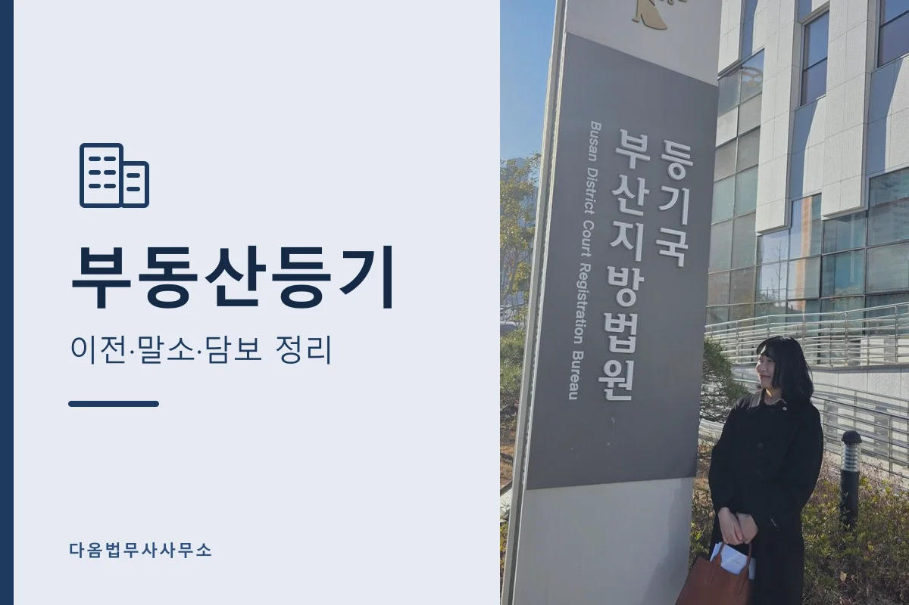 |
/services/real-estate-registration | 부동산등기 이전·말소·담보 정리 |
document-focus | 1200×800 · 62KB | approved → 검토 후 approved 로 변경 |
| svc-ownership-transfer | /image/썸네일-등기필증_매매증여.jpg | 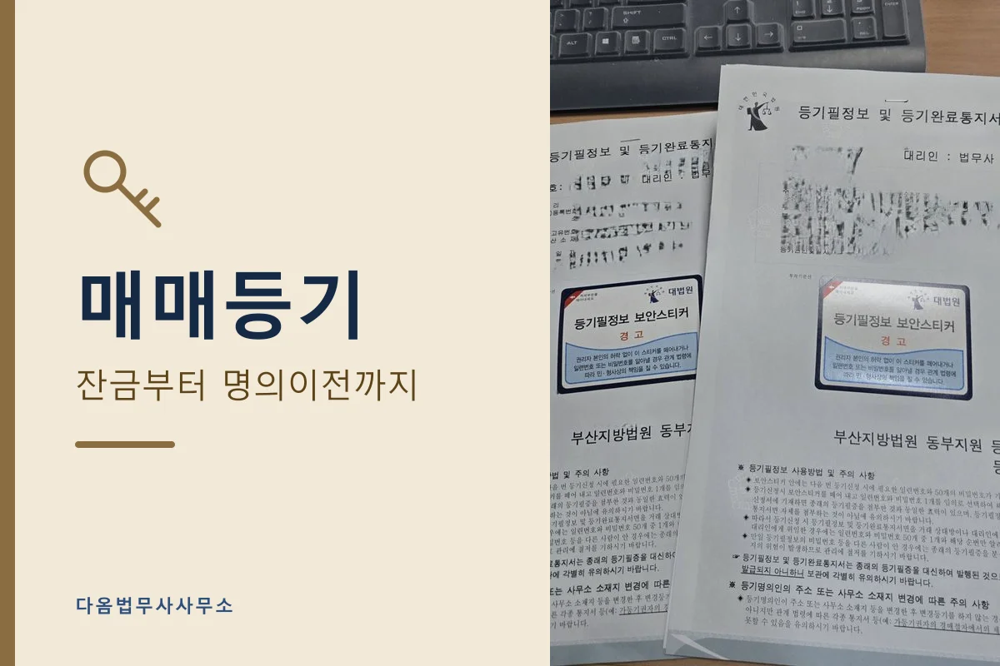 |
/services/ownership-transfer | 매매등기 잔금부터 명의이전까지 |
document-focus | 1200×800 · 73KB | approved → 검토 후 approved 로 변경 |
| svc-corporate | /image/썸네일-계약임원.jpg | 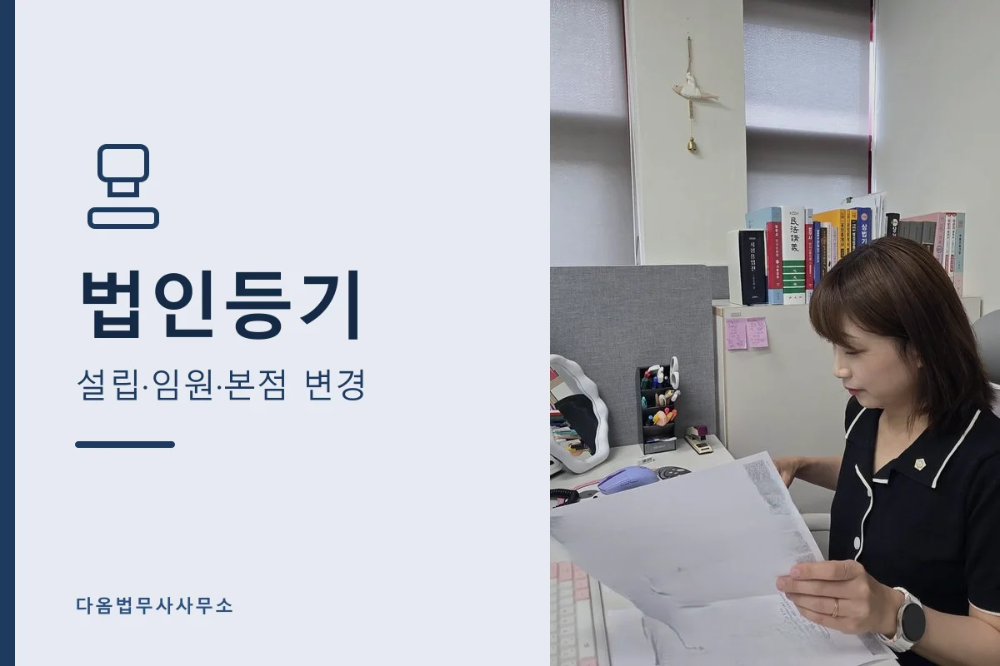 |
/services/corporate-registration | 법인등기 설립·임원·본점 변경 |
document-focus | 1200×800 · 50KB | approved → 검토 후 approved 로 변경 |
| svc-company-establishment | (없음) | 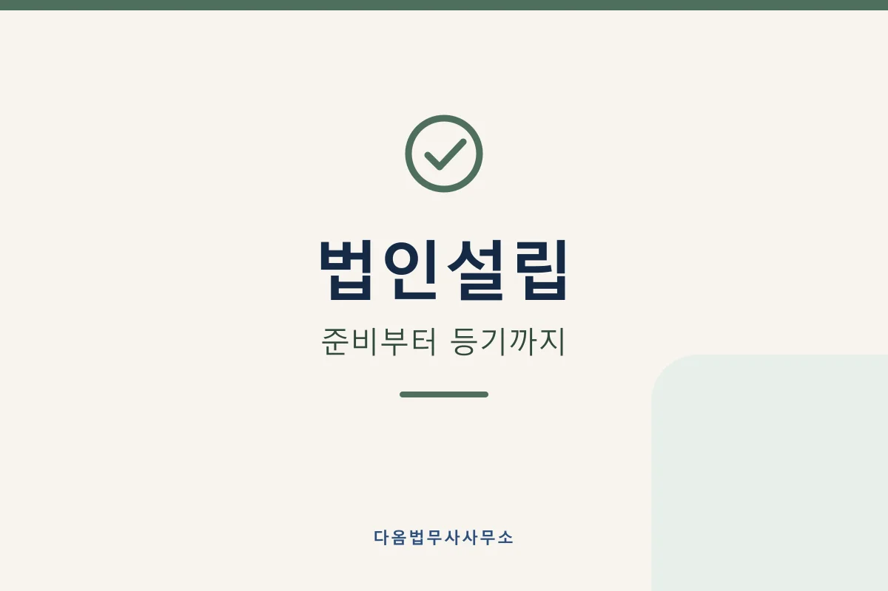 |
/services/company-establishment | 법인설립 준비부터 등기까지 |
minimal-type | 1200×800 · 10KB | approved → 검토 후 approved 로 변경 |
| svc-director-change | (없음) | 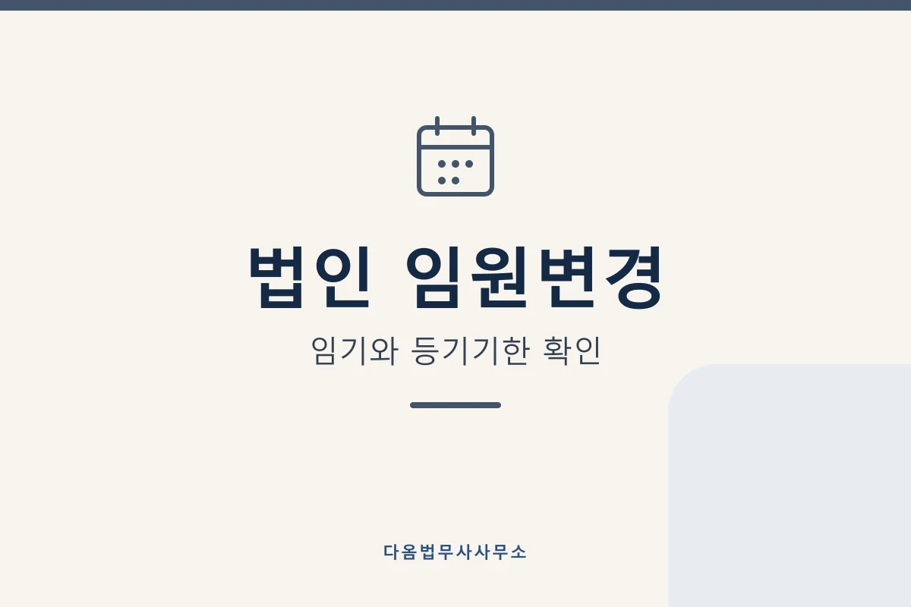 |
/services/director-change | 법인 임원변경 임기와 등기기한 확인 |
minimal-type | 1200×800 · 13KB | approved → 검토 후 approved 로 변경 |
| svc-rehabilitation | /image/썸네일-동부지원.jpg | 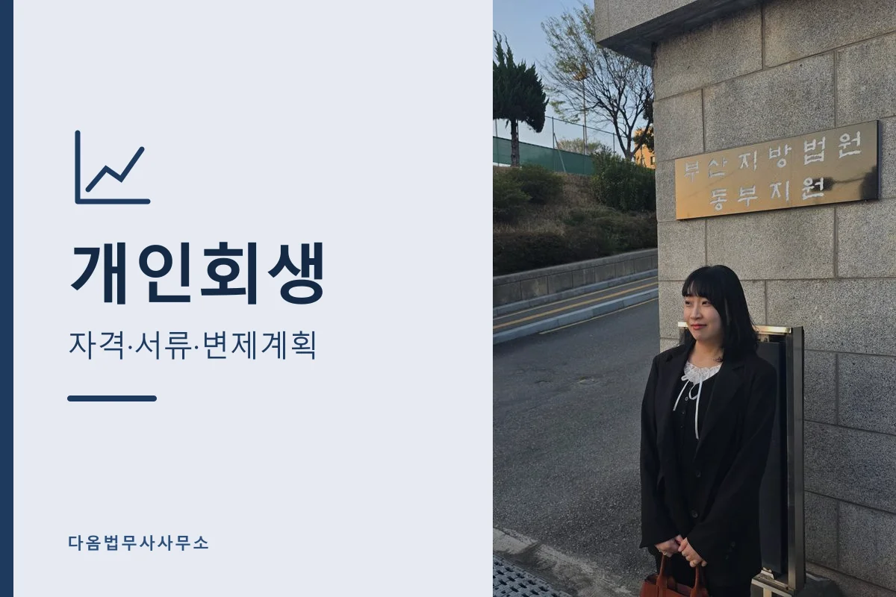 |
/services/personal-rehabilitation | 개인회생 자격·서류·변제계획 |
document-focus | 1200×800 · 94KB | approved → 검토 후 approved 로 변경 |
| svc-bankruptcy | /image/썸네일-서부지원.jpg | 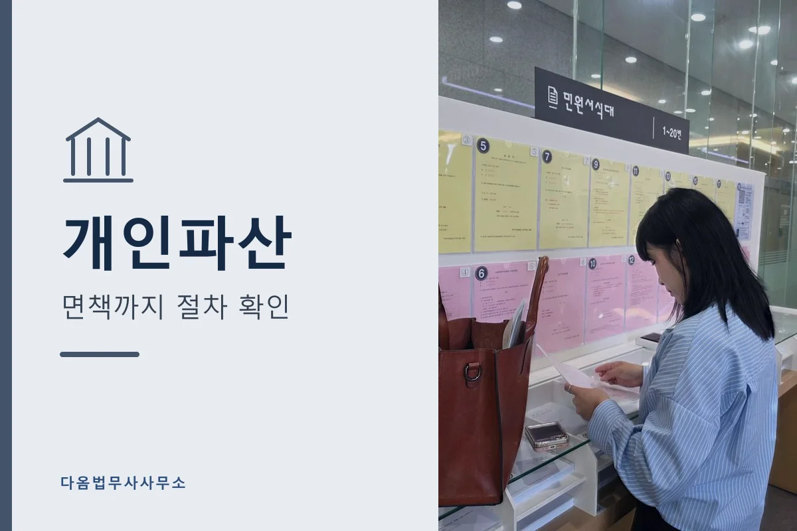 |
/services/bankruptcy | 개인파산 면책까지 절차 확인 |
document-focus | 1200×800 · 60KB | approved → 검토 후 approved 로 변경 |
| local-busan-lawyer | /image/썸네일-정면.jpg | 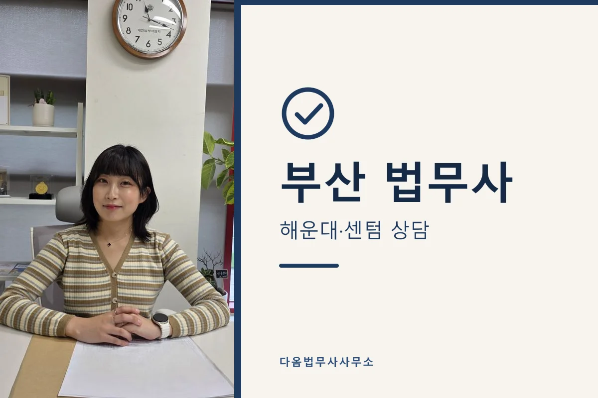 |
/부산법무사 | 부산 법무사 해운대·센텀 상담 |
portrait-left | 1200×800 · 52KB | approved → 검토 후 approved 로 변경 |
| local-busan-inheritance | /image/썸네일-등기운영과.jpg | 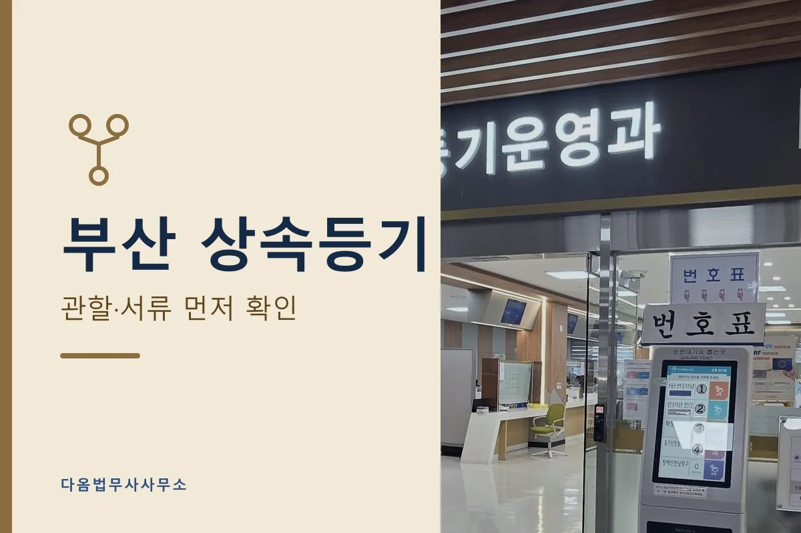 |
/부산상속등기 | 부산 상속등기 관할·서류 먼저 확인 |
document-focus | 1200×800 · 62KB | approved → 검토 후 approved 로 변경 |
| lecture-hub | /image/강의-시민도서관1주차.jpg | 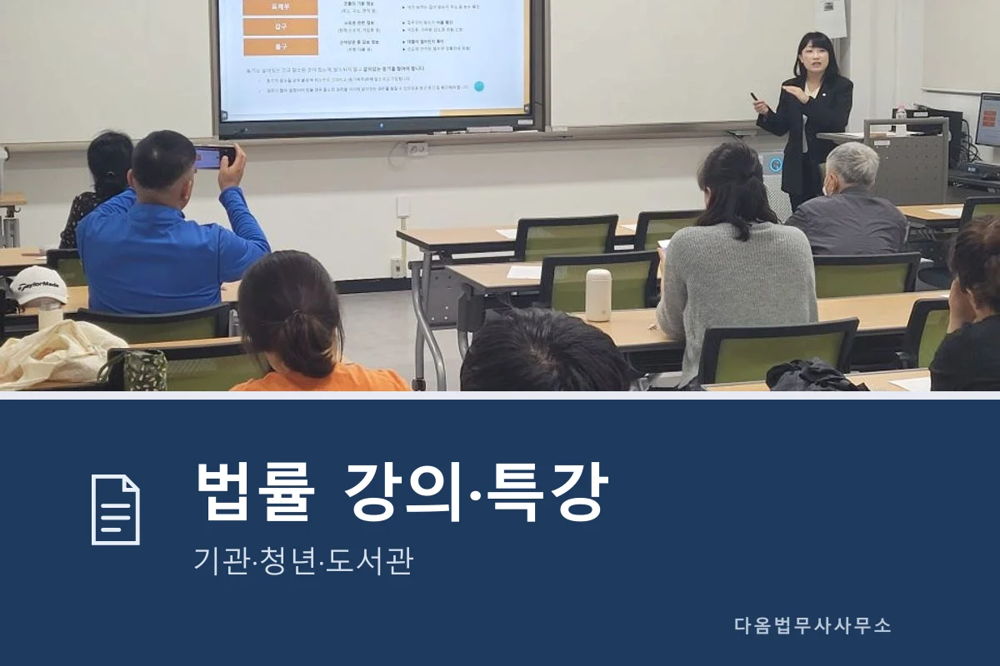 |
/법률강의 | 법률 강의·특강 기관·청년·도서관 |
lecture-focus | 1200×800 · 67KB | approved → 검토 후 approved 로 변경 |
| lecture-jeonse | /image/강의-부산광역시자립지원전담기관전세사기예방.jpg | 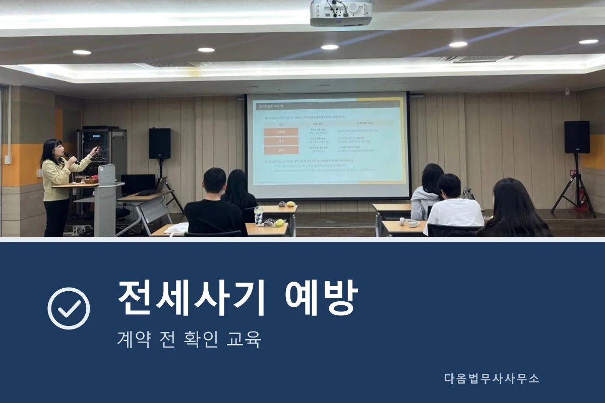 |
/전세사기예방교육 | 전세사기 예방 계약 전 확인 교육 |
lecture-focus | 1200×800 · 53KB | approved → 검토 후 approved 로 변경 |
{kind=link}
{kind=link}
{kind=link}
{kind=link}
{kind=link}
{kind=link}
{kind=link}
{kind=link}
{kind=link}
{kind=link}
{kind=link}
{kind=link}
{kind=link}